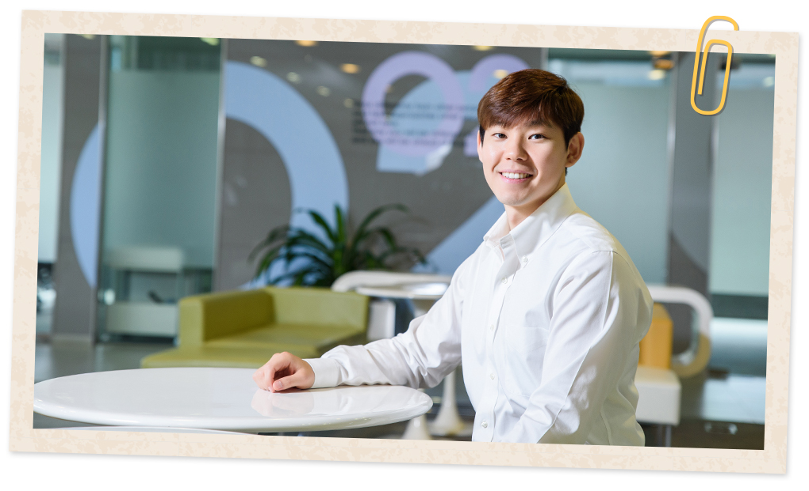
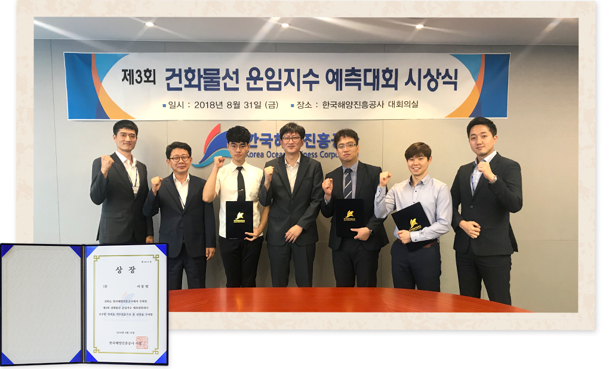
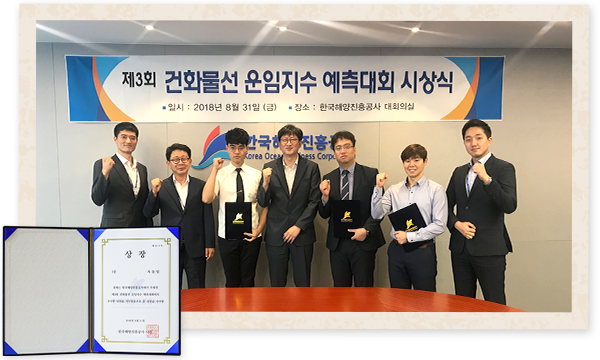

와 제 롤모델이 잡스에요!!! 아이폰 첫 출시되고 나서부터 계속 아이폰 쓰고 있는데 잡스가 너무 그리워요ㅠㅠ 지금은 돈만 벌려고 하는 것 같아서 디자인 발전도 없고ㅠㅠ와 제 롤모델이 잡스에요!!! 아이폰 첫 출시되고 나서부터 계속 아이폰 쓰고 있는데 잡스가 너무 그리워요ㅠㅠ 지금은 돈만 벌려고 하는 것 같아서 디자인 발전도 없고ㅠㅠ와 제 롤모델이 잡스에요!!! 아이폰 첫 출시되고 나서부터 계속 아이폰 쓰고 있는데 잡스가 너무 그리워요ㅠㅠ 지금은 돈만 벌려고 하는 것 같아서 디자인 발전도 없고ㅠㅠ와 제 롤모델이 잡스에요!!! 아이폰 첫 출시되고 나서부터 계속 아이폰 쓰고 있는데 잡스가 너무 그리워요ㅠㅠ 지금은 돈만 벌려고 하는 것 같아서 디자인 발전도 없고ㅠㅠ와 제 롤모델이 잡스에요!!! 아이폰 첫 출시되고 나서부터 계속 아이폰 쓰고 있는데 잡스가 너무 그리워요ㅠㅠ 지금은 돈만 벌려고 하는 것 같아서 디자인 발전도 없고ㅠㅠ
핫이슈
‘운임지수 예측대회’ 1위
서동범 벌크운항팀 대리 인터뷰
1등의 비결이요? 많은 분들의 도움 덕분이죠
1등의 비결이요? 많은 분들의 도움 덕분이죠
선선한 바람, 빗소리가 예쁜 가을의 초입에서 만난 인터뷰의 주인공은 벌크운항팀의 서동범 대리다. 지난 8월 한국해양진흥공사가 주최한 ‘운임지수 예측 대회’에서 수많은 경쟁자를 제치고 1위를 수상한 그는 최근 주변 동료들의 관심과 칭찬에 몸둘 바를 모르고 있다고 했다. <바다소리>가 전한 축하의 말에도 “많은 분들의 도움 덕분입니다”라며 환하게 웃는 그의 모습에서 겸손함이 묻어났다.
글
편집실
사진
김선재
간단한 본인 소개 부탁드립니다
현재 벌크운항팀에서 소형 드라이벌크선(Super/Handy Size Vessel)의 운항을 담당하고 있습니다. 벌크영업팀에서 용선 및 화물 계약을 성사하면 그 계약을 바탕으로 선박의 인도(Delivery)부터 반선(Redelivery)까지 발생하는 일련의 모든 운항 업무를 하고 있습니다.
대회에 참가하게 된 계기가 궁금합니다
올해 초 한국해양진흥공사가 한국 해운산업의 발전을 위해 한국해양보증보험, 한국선박해양, 한국해운거래정보센터 이 세 기관을 하나로 통합하여 만들어진다는 것을 알게 됐습니다. 당시 대회 주관사인 한국해운거래정보센터가 어떤 곳인지 궁금해 방문한 홈페이지에서 관련 대회가 있다는 것을 확인하고, ‘수상을 해야겠다’는 욕심보다는 ‘이번 기회로 공부해보자’, ‘업무 영역을 넓혀보자’는 마음으로 참가했습니다.
건화물선 운임지수란 무엇일까요?
건화물선(Dry Bulk Carrier)은 곡물, 석탄, 철광석 등 원자재를 포장 없이 나르는 선박입니다. 선박의 크기에 따라 케이프급(Cape), 파나막스급(Panamax), 수프라막스급(Supramax), 핸디막스급(Handymax)으로 나눠집니다. 이 선박들의 평균 운임을 나타내는 지수가 ‘건화물선 운임지수’인데요. 이번 대회는 ‘2018년 2분기 건화물선의 일일 용선료 평균값과 하반기 운임시장의 전망’을 구하는 대회였습니다.

이를 정확하게 예측하는 일이 왜 중요할까요?
건화물선 운임지수는 선박을 구매할 것인지, 팔 것인지, 낮은 가격에 빌려서 사용할 것인지, 아니면 비싸게 빌려줄 것인지를 결정하는 근거입니다. 자칫 잘못된 예측을 바탕으로 한 의사결정은 비싼 가격에 선박을 빌리거나 싼 가격에 배를 빌려주는 우를 범할 수 있기 때문입니다. 운임의 정확한 예측은 최대의 수익을 위해서 필수적인 부분입니다.
어떤 준비와 노력을 하셨는지 궁금합니다
모르는 부분은 벌크사업부에 계시는 선배님들에게 여쭤보았고, 운항 업무를 하면서 쌓은 경험적인 측면에서 2분기에는 1분기 대비 상승할 것이라고 판단할 수 있었습니다. 얼마만큼 상승할 것이냐는 외부 기관에서 발행한 분석 자료를 통해 판단할 수 있었습니다. 그것을 바탕으로 예측한 상승률이 2분기 운임 평균값과 가장 근접하여 좋은 결과를 얻을 수 있었습니다.
운임지수를 분석하고 예측하는 과정에서 얻은 직관이나 느낀점이 있다면?
운이 좋아 가장 가까운 근사치로 수상을 하였지만, 운임은 많은 변수를 가지고 있습니다. 중국과 미국의 무역전쟁으로 인한 긴장감, 유가의 변동, 중국의 철광석 수입 규제, 환경 규제 등 운임에 미치는 다양한 변수가 존재합니다. 다양한 시각으로 해운을 이해하고 접근해야겠다는 생각을 했습니다.
당당히 1위 수상의 쾌거를 이루셨는데, 수상 소감이 궁금합니다
1위 수상이라는 말은 사실 좀 부끄럽습니다. 아직도 업무를 하면서 쌓아야 할 경험과 배워야할 부분이 많습니다. 이번 대회에서 운도 많이 따라줬다고 생각합니다. 이를 계기로 운임지수에 더욱 관심을 갖고 진정한 실력을 쌓을 수 있도록 노력해야겠다고 다짐했습니다.
그 밖에 사보를 통해 전하고 싶은 이야기가 있다면 말씀해주세요
먼저 벌크사업부에서 수익 개선을 위해 노력하시는 선배, 동료, 후배들에게 감사의 말씀을 전합니다. 사실 이 대회에 수상자는 저뿐이 아닙니다. 지난해 벌크전략팀의 김수한 부장님도 1위를 하셨습니다. 제가 이야기 하고 싶은 것은 벌크사업부에는 유능한 인력풀을 가지고 있다는 것입니다. 기회가 된다면 벌크사업부에 투자가 확대되어 더욱 다양한 수익 창출의 기회가 열렸으면 좋겠습니다.


한국해양진흥공사 주최로 열린 ‘운임지수 예측대회 시상식’에서 서동범 대리(사진 맨 오른쪽에서 두 번째)가 1위를 수상했다
-
최고예요
322
-
좋아요
322
-
슬퍼요
322
-
그저 그래요
322
-
화나요
322